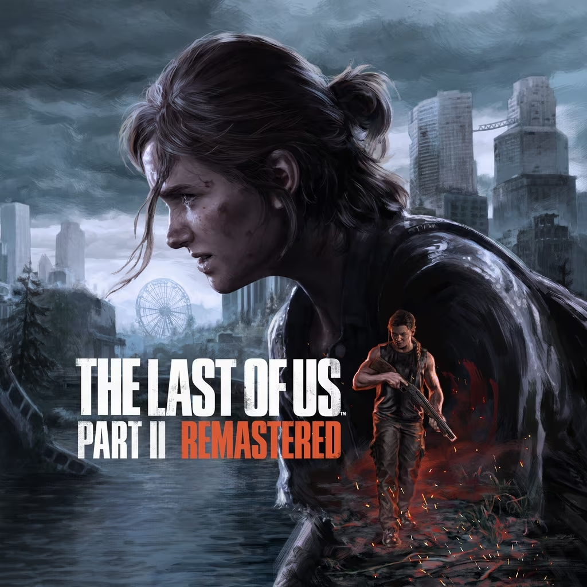

The Last of Us Part II: Accesibilidad revolucionaria
El aclamado juego de Naughty Dog incluye más de 60 opciones de accesibilidad visual, auditiva y motriz.
Entre las opciones se encuentran la asistencia de apuntado, navegación guiada por audio, modos de alto contraste, subtítulos personalizables, lectura automática del texto y muchas funciones más pensadas para garantizar que todos los jugadores puedan disfrutar la experiencia completa.